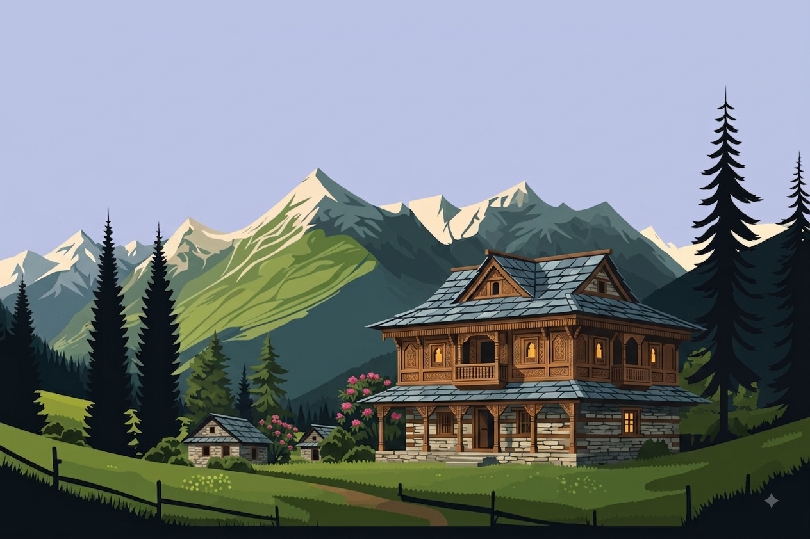

आ
घर का आँगन
First lightChai brewing, and a familiar melody floating through the house.

कुमाऊँनी गीत
A living archive of Kumaoni folk music — songs that carry the scent of pine forests, the warmth of village hearths, and the echo of mountain valleys.
Kumaoni music carries a unique kind of memory — the echo of a wedding procession, a cassette playing on a winter evening, or a voice drifting through an open window in the hills.
Chai brewing, and a familiar melody floating through the house.
Relatives arriving, drums in the lane, nights that stretch longer than planned.
Cold air through the window, and a song that shortens the journey.
Quiet hours when the house settles and old memories find room to speak.
A listening rhythm inspired by old broadcast routines — songs for working, travelling, gathering, and remembering the hills.
Open windows, birdsong, and melodies older than the morning light.
The working-day soundtrack — lively, familiar, easy to hum along.
The softer side. For those away from home, and those thinking of it.